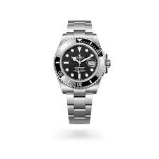
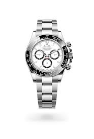

Relógios
Relógios Suíços
Rolex
Não tem como falar de relógio sem falar de rolex, veja agora alguns de seus principais modelos.
Principais modelos
- Rolex Submariner
- Rolex Cosmograph Daytona
- Rolex Datejust
Imagem dos modelos
- 
- 
.jpeg)
Descrição dos modelos
- Rolex Submariner
- Lançado em 1953, o Rolex Submariner foi o primeiro relógio de pulso com impermeabilidade até 100 metros de profundidade. Atualmente, ele atinge a marca de 300 metros. As principais funções do modelo, como a luneta giratória graduada, a exibição luminescente e os grandes ponteiros e indicadores das horas, também impulsionaram a criação da linha de relógios de mergulho que a Rolex viria a desenvolver.Atualmente, o Submariner é um relógio icônico, e seu renome ultrapassou as barreiras do mundo profissional para o qual havia sido inicialmente concebido. Ele é mais do que um relógio; é o Submariner.
- Rolex Cosmograph Daytona
- Lançado em 1963, o Cosmograph Daytona transcendeu sua dimensão relojoeira para tornar-se um ícone. Seu nome, indissociável do célebre circuito de corrida, assim como sua face gráfica, fizeram dele uma lenda. Mas é também no coração deste cronógrafo excepcional que palpita a verdadeira mecânica do mito: um mecanismo projetado e manufaturado pela Rolex que oferece desempenhos superlativos em quaisquer circunstâncias. Aprimorado e sublimado continuamente ao longo do tempo, o Cosmograph Daytona também se revelou um aliado tão confiável quanto preciso.
- Rolex Datejust
- Até mesmo os dias mais corriqueiros podem marcar nossas vidas, desencadeando novas aspirações. Desde que foi criado, em 1945, o Datejust vem sendo continuamente reinventado – embora jamais tenha deixado de simbolizar a elegância clássica da Rolex. O Datejust é um marco da relojoaria, visto que foi o primeiro relógio de pulso cronômetro, automático e impermeável a exibir a data em uma abertura. Sua lente de aumento Cyclops aumenta esses atributos para lembrar que, embora o dia tenha 24 horas; cabe a nós torná-lo uma data inesquecível.
Link dos modelos
Rolex Submariner
Rolex Cosmograph Daytona
Rolex Datejust